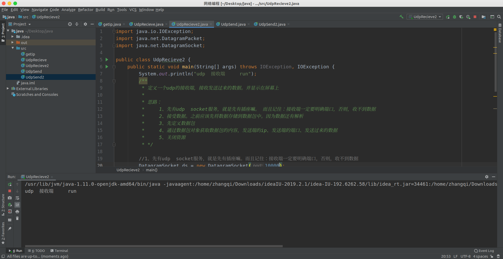
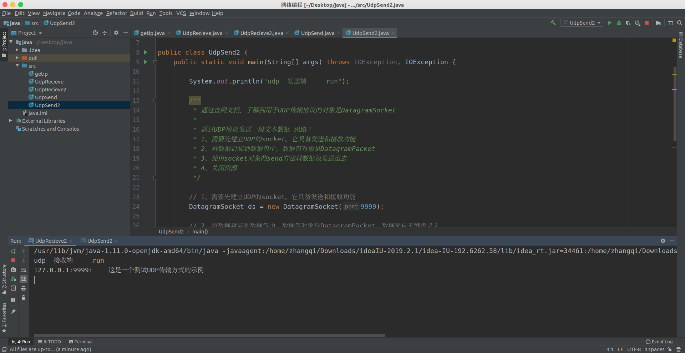

部分内容需要查文档学习，我们需要了解下面的两个类：java.net.DatagramSocket和java.net.DatagramPacket
DatagramSocket() 构造数据报套接字并将其绑定到本地主机上任何可用的端口。
DatagramSocket(int port, InetAddress laddr) 创建数据报套接字，将其绑定到指定的本地地址。
send(DatagramPacket p) 从此套接字发送数据报包。
receive(DatagramPacket p)从此套接字接收数据报包。
close() 关闭此数据报套接字。
DatagramPacket(byte[] buf, int offset, int length, InetAddress address, int port)
构造数据报包，用来将长度为 length 偏移量为 offset 的包发送到指定主机上的指定端口号。
DatagramPacket(byte[] buf, int length, InetAddress address, int port)
构造数据报包，用来将长度为 length 的包发送到指定主机上的指定端口号。
DatagramPacket(byte[] buf, int length)
构造 DatagramPacket，用来接收长度为 length 的数据包。
先写一个UDP的接收端，大概思路就是，先通过
DatagramSocket ds = new DatagramSocket(10003);new一个对象，这个对象用来发送和接收数据包的套接字。然后通过
DatagramPacket dp = new DatagramPacket(buf, buf.length);定义数据包，最后调用recieve函数来接收数据，并将数据封装在数据包中。
值得注意的是发送端的发送至的IP地址及其端口必须和接收端的主机IP以及端口相对应
import java.io.IOException;
import java.net.DatagramPacket;
import java.net.DatagramSocket;
public class UdpRecieve {
public static void main(String[] args) throws IOException, IOException {
System.out.println("udp 接收端......run");
/**
* 定义一个udp的接收端，接收发送过来的数据。并显示在屏幕上
*
* 思路：
* 1、先有udp socket服务，就是先有插座。 而且记住：接收端一定要明确端口，否则，收不到数据
* 2、接受数据。之前应该先将数据存储到数据包中。因为数据还有解析
* 3、先定义数据包
* 4、通过数据包对象获取数据包的内容，发送端的ip、发送端的端口、发送过来的数据
* 5、关闭资源
* */
//1、先有udp socket服务，就是先有插座。而且记住：接收端一定要明确端口，否则，收不到数据
DatagramSocket ds = new DatagramSocket(10000);
//2、接受数据。之前应该先将数据存储到数据包中。因为数据还有解析
//3、先定义数据包
byte[] buf = new byte[1024]; //缓冲区，保存数据
DatagramPacket dp = new DatagramPacket(buf, buf.length);
ds.receive(dp); //阻塞，在接受到数据之前一直处于阻塞状态，类似于输入操作
//4、通过数据包对象获取数据包的内容，发送端的ip、发送端的端口、发送过来的数据
String ip = dp.getAddress().getHostAddress();
int port = dp.getPort();
String text = new String(dp.getData(),0,dp.getLength());
System.out.println(ip+"---:---"+port+"---:---"+text);
//5、关闭资源
ds.close();
}
}
将其装在一个while(true)循环里，可以持续接收数据
import java.io.IOException;
import java.net.DatagramPacket;
import java.net.DatagramSocket;
public class UdpRecieve2 {
public static void main(String[] args) throws IOException, IOException {
System.out.println("udp 接收端 run");
/**
* 定义一个udp的接收端，接收发送过来的数据。并显示在屏幕上
*
* 思路：
* 1、先有udp socket服务，就是先有插座。 而且记住：接收端一定要明确端口，否则，收不到数据
* 2、接受数据。之前应该先将数据存储到数据包中。因为数据还有解析
* 3、先定义数据包
* 4、通过数据包对象获取数据包的内容，发送端的ip、发送端的端口、发送过来的数据
* 5、关闭资源
* */
//1、先有udp socket服务，就是先有插座嘛。而且记住：接收端一定要明确端口，否则，收不到数据
DatagramSocket ds = new DatagramSocket(10000);
while(true)
{
//2、接受数据。之前应该先将数据存储到数据包中。因为数据还有解析
//3、先定义数据包
byte[] buf = new byte[1024];
DatagramPacket dp = new DatagramPacket(buf, buf.length);
ds.receive(dp); //阻塞
//4、通过数据包对象获取数据包的内容，发送端的ip、发送端的端口、发送过来的数据
String ip = dp.getAddress().getHostAddress();
int port = dp.getPort();
String text = new String(dp.getData(),0,dp.getLength());
System.out.println(ip+":"+port+": "+text);
}
}
}用下面这句先创建一个socket来指引数据的去向，这个里面的参数“8888”表示的不是发送目的地主机的端口，而是发送起点的端口，表示从这个主机的8888端口发出去的。
DatagramSocket ds = new DatagramSocket(8888);然后再用下面这句将数据内容，发送的目的地都封装到这么一个数据包里面，里面的参数buf表示字节数组，必须是字节数组，不能是字符串数组，buf.length无疑是传输的长度， InetAddress.getByName("127.255.25.1")是目的地的主机地址，这句的含义是通过ip地址获取主机地址，10000表示目的地接收这个数据的端口，这个端口要保证没有被其他应用占用。
DatagramPacket dp = new DatagramPacket(buf, buf.length, InetAddress.getByName("127.255.25.1"), 10000);最后调用send函数即可完成发送
import java.io.IOException;
import java.net.DatagramPacket;
import java.net.DatagramSocket;
import java.net.InetAddress;
public class UdpSend {
public static void main(String[] args) throws IOException, IOException {
System.out.println("udp 发送端 run");
/**
* 通过查阅文档，了解到用于UDP传输协议的对象是DatagramSocket
*
* 通过UDP协议发送一段文本数据
* 思路：
* 1、需要先建立UDP的socket。它具备发送和接收功能
* 2、将数据封装到数据包中。数据包对象是DatagramPacket
* 3、使用socket对象的send方法将数据包发送出去
* 4、关闭资源
* */
//1、需要先建立UDP的socket。它具备发送和接收功能
DatagramSocket ds = new DatagramSocket(8888);
//2、将数据封装到数据包中。数据包对象是DatagramPacket
String text = "hello udp来了！";
byte[] buf = text.getBytes(); //将数据转成字节数组
//将字节数组封装到数据包中
DatagramPacket dp = new DatagramPacket(buf, buf.length, InetAddress.getByName("127.255.25.1"), 10000);
//3、使用socket对象的send方法将数据包发送出去
ds.send(dp);
//4、关闭资源
ds.close();
}
}发送键盘输入的数据，这里其实就是加了键盘录入，IO流的操作
import java.io.BufferedReader;
import java.io.IOException;
import java.io.InputStreamReader;
import java.net.DatagramPacket;
import java.net.DatagramSocket;
import java.net.InetAddress;
public class UdpSend2 {
public static void main(String[] args) throws IOException, IOException {
System.out.println("udp 发送端 run");
/**
* 通过查阅文档，了解到用于UDP传输协议的对象是DatagramSocket
*
* 通过UDP协议发送一段文本数据 思路：
* 1、需要先建立UDP的socket。它具备发送和接收功能
* 2、将数据封装到数据包中。数据包对象是DatagramPacket
* 3、使用socket对象的send方法将数据包发送出去
* 4、关闭资源
*/
// 1、需要先建立UDP的socket。它具备发送和接收功能
DatagramSocket ds = new DatagramSocket(9999);
// 2、将数据封装到数据包中。数据包对象是DatagramPacket。数据来自于键盘录入
BufferedReader bufr = new BufferedReader(new InputStreamReader(System.in));
String line = null;
while ((line = bufr.readLine()) != null)
{
if("over".equals(line))
break;
byte[] buf = line.getBytes(); // 将数据转成字节数组
// 将字节数组封装到数据包中
DatagramPacket dp = new DatagramPacket(buf, buf.length, InetAddress.getByName("127.255.25.1"), 10000);
ds.send(dp);
}
// 4、关闭资源
ds.close();
}
}发送前

从键盘录入发送内容
接收端
